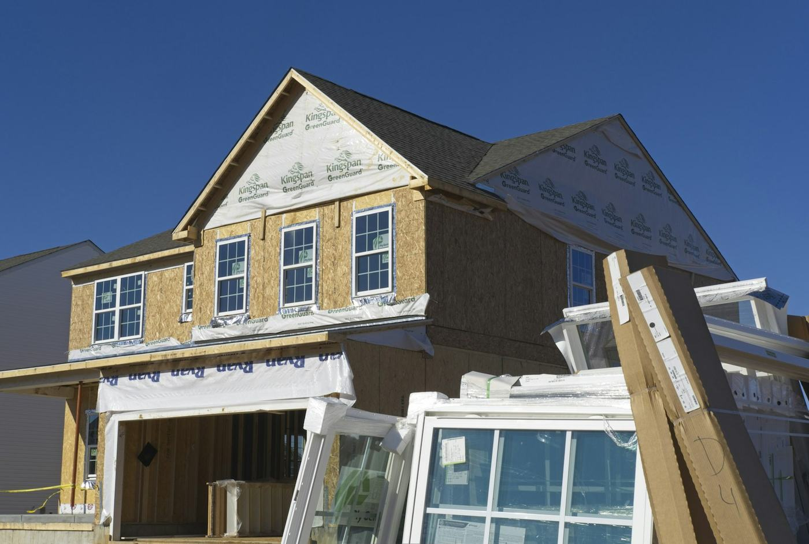
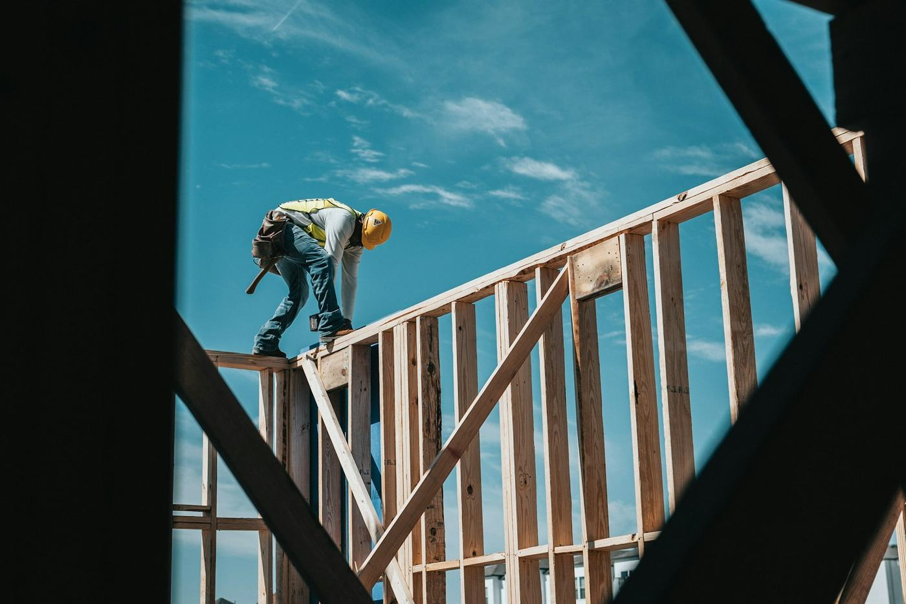

Huerkamp Home Group
Free guide
How to choose a builder, what the base price leaves out and how Minnesota's new home warranty protects you.
Free guide for new construction buyers
A brand-new home means modern layouts, new systems and nothing to fix for a while. It also means a different way of buying: you negotiate with a builder, pick options from a price list and often wait months for the home to be finished.
This guide covers what to know before you walk into a model home. See new construction in the Twin Cities for current developments. Questions? Call or text us at (612) 502-7653.
Before you visit a model
The salesperson in the model home works for the builder. Many builders require your agent to come with you, or register you, on your first visit for your agent to represent you later. Your agent can compare builders, review the contract and keep track of the build.
A spec home (or inventory home) is already built or under way, so it's faster and the options are set. A to-be-built home lets you pick the lot, plan and options. A custom home is designed for you, usually on your own lot, and takes the longest.
Visit homes the builder finished a few years ago, read reviews and ask owners how warranty requests were handled. Check that the builder is licensed with the Minnesota Department of Labor and Industry.

Price and options
Lot premiums, upgraded finishes, appliances, window coverings, landscaping and finished basements can add a lot. Ask for the full options price list and what the model home includes; models usually show many upgrades.
Structural choices (extra windows, a larger garage, a finished lower level rough-in, ceiling height, electrical and plumbing) are far harder to add later than paint, lighting or countertops.
Builders often offer incentives: help with closing costs, a lower rate through their preferred lender, or free upgrades. Compare the total cost with an outside lender too; an incentive may be worth more or less than it looks.
New developments often have an HOA, and new streets and utilities may come with special assessments. Ask what is paid, what is pending and who pays it.
Minnesota property is valued as of January 2 each year. If your home was a lot or partly built on that date, your first tax bill may be low. Budget for the tax on the finished home.
The contract and the build
Builder contracts are written by the builder. Check the deposit and when it becomes non-refundable, the completion date and what happens if it slips, how price changes are handled and what you can inspect. Your agent or an attorney can review it with you.
Inspectors can check a new home before the drywall goes up (so they can see framing, wiring and plumbing) and again before closing. Ask the builder in writing to allow both.
If the build takes months, your loan approval may need updating. Don't take on new debt or change jobs without talking to your lender, and ask how long your rate lock lasts.
Before closing, walk the home with the builder and list everything that needs fixing or finishing: paint touch-ups, trim, doors that stick. Get the list in writing with dates.
After you move in
Minnesota law gives new home buyers statutory warranties: one year for faulty workmanship and materials, two years for faulty plumbing, electrical, heating and cooling systems, and ten years for major construction defects. There are notice requirements, so read the law or ask an attorney.
Keep a list of issues and send them to the builder in writing within the warranty periods. Many builders schedule a check-in around the one-year mark; don't wait for it if something is wrong.
Apply for homestead classification with your county assessor once you move in. It can lower your property taxes; apply by December 15 for it to count the next year.
Ready when you are
Huerkamp Home Group has helped buyers and sellers across the Twin Cities since 2002, and has been a Dave Ramsey Endorsed Local Provider for more than 15 years.
Sources
Photos: Ernie Journeys (cover), Josh Olalde and Sasun Bughdaryan on Unsplash. General information, not legal, tax or lending advice. Rules and programs change; confirm details with your lender, title company, tax adviser or attorney. Huerkamp Home Group is a team of licensed REALTORS® with Keller Williams Preferred Realty. Equal Housing Opportunity.